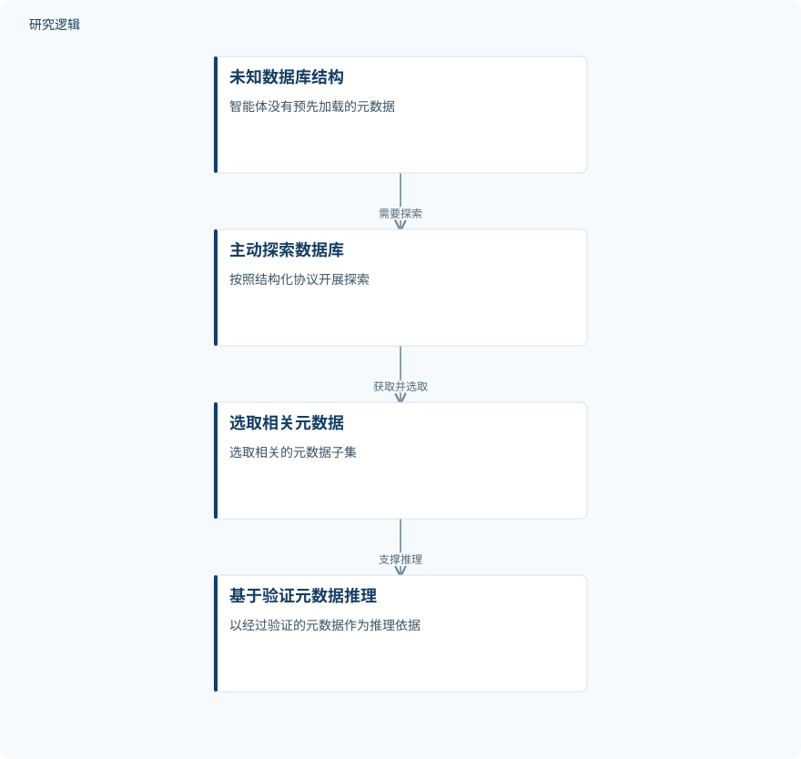

摘要解读
TRUST-SQL：面向未知数据库模式的工具集成多轮强化学习
TRUST-SQL: Tool-Integrated Multi-Turn Reinforcement Learning for Text-to-SQL over Unknown Schemas
解读更新 2026-11-27 21:57 · 依据公开摘要整理，未核验全文细节
当数据库结构没有预先提供给模型，大语言模型智能体还能把自然语言问题转化为 SQL 查询吗？TRUST-SQL 围绕这一问题，将数据库探索与强化学习结合，为理解未知结构下的 Text-to-SQL 提供了一个切入点。
文章目录
从完整结构预载到未知结构探索
Text-to-SQL 的许多进展建立在“完整结构假设”上：模型的上下文中预先装入完整数据库结构。但这并不能直接回答，智能体在不了解底层表及其关系时，能否自行解决查询问题。
摘要指出，注入完整结构可能超出有效上下文窗口，也可能让无关元数据干扰推理；随着数据库演变，这种方式的可靠性还可能下降。未知结构设定因此要求智能体主动探索数据库，只选取相关的元数据子集。
用分阶段探索连接可信元数据与训练
TRUST-SQL 将任务建模为部分可观测马尔可夫决策过程，让自主智能体遵循结构化的四阶段协议，以经过验证的元数据作为推理依据。摘要没有展开各阶段的具体操作。
这一协议也为 Phase-Aware GRPO 提供结构边界。该策略使用词元级掩码优势，将探索奖励与执行结果区分开来，以解决奖励归因问题。
依据摘要整理的未知结构查询过程


仅概括摘要明确描述的探索、元数据选择与推理关系，不代表论文原图或四阶段协议的具体划分。
下载 SVG图示关系说明
实线表示相邻阶段的信息流，虚线表示跨阶段联系或反馈。
未知数据库结构 → 主动探索数据库：需要探索；主动探索数据库 → 选取相关元数据：获取并选取；选取相关元数据 → 基于验证元数据推理：支撑推理
无预载元数据下的基准表现
摘要报告，Phase-Aware GRPO 相较标准 GRPO 获得了 9.9% 的相对提升。该结果对应摘要所述比较，不宜据此推断所有任务或配置都有相同增幅。
作者还报告了跨五个基准的实验，称 TRUST-SQL 在 4B/8B/14B 多种模型规模下有效。尽管没有预先加载元数据，智能体在多数基准上的表现仍达到或超过依赖结构预填充的既有基线。
摘要尚未展开的比较与验证范围
仅凭摘要，无法判断各基准的样本规模、具体评价指标和数据构成，也无法核对各模型规模及各基准上的逐项结果。
摘要没有列出完整的基线名单、比较配置或四阶段协议细节，因此目前难以判断提升来自哪些具体环节，也无法确定结论在不同数据库演变条件下的验证范围。这些是摘要未报告的信息，并不意味着论文没有开展相关分析。
阅读启发：关注探索与结果如何归因
对关注大语言模型智能体的读者，一个值得继续追问的问题是：面对未知数据库结构，智能体如何确认所选元数据足以支撑查询？阅读论文时可进一步关注四阶段协议及其元数据验证方式。
另一个阅读重点是探索奖励与执行结果的区分：可结合文中具体比较，理解词元级掩码优势如何应用，以及报告的相对提升是在什么评价条件下得到的。
以上为本站阅读启发与建议，不是论文已验证的结论。